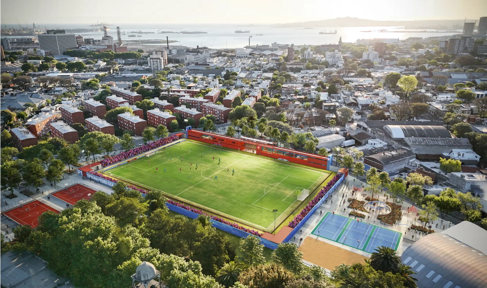
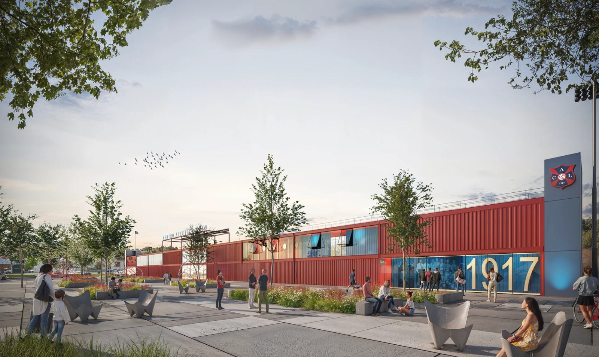
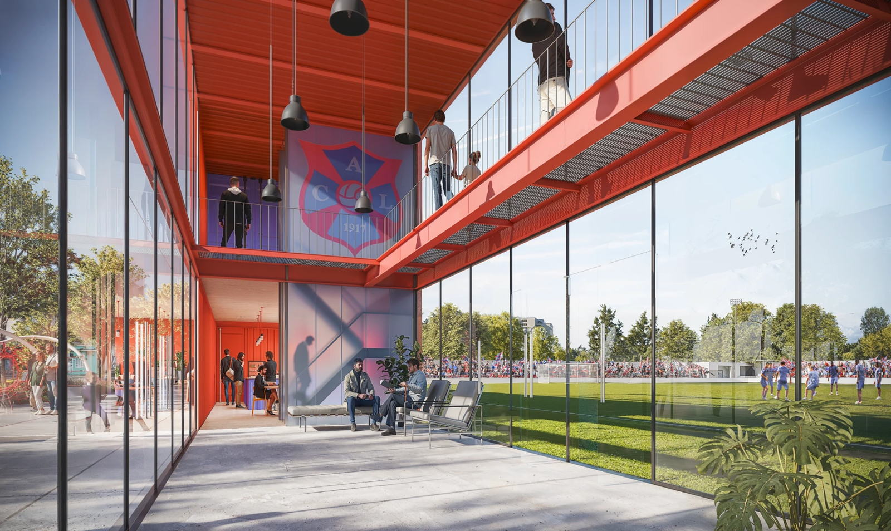

For the squad
Playing at home in the neighbourhood, with our own changing rooms and pitch.
Chapter VI
A ground of its own in Arroyo Seco. It is not built yet: this is the plan.
The starting point
Lito plays and trains in Arroyo Seco, on a site the club has been using and tidying up. Main pitch, training pitches and the facilities that carry the day to day.
The plan for the new ground is drawn on that same land.

Plan · not built
The ground to come
A pitch with stands, sports facilities and open space for the neighbourhood. The images that follow are renders of the plan: they show an intention, not finished work and not a date.



What it means
Playing at home in the neighbourhood, with our own changing rooms and pitch.
A fixed place to train all year round.
Open sporting space in Arroyo Seco.
The plan is in development. Timelines, phases and funding will be published here once the club confirms them.
Membership fees keep the club going while the plan moves forward.
The history is already written.
The next chapter is not.

Centro Atlético Lito1917 — Montevideo
VI · The Next Chapter · Centro Atlético Lito